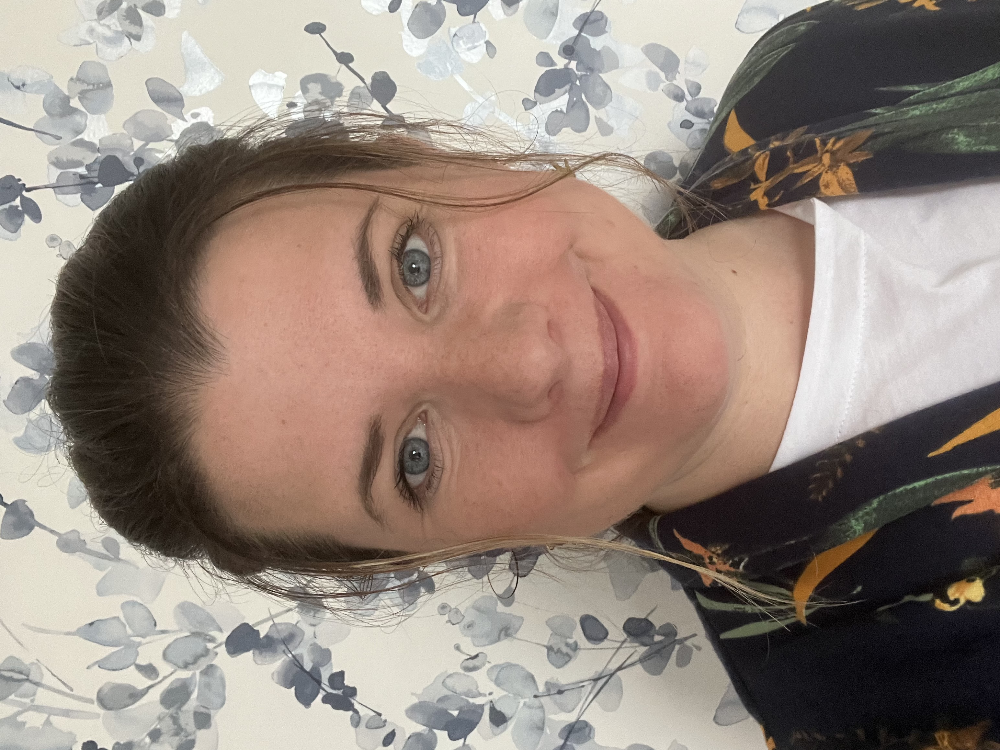
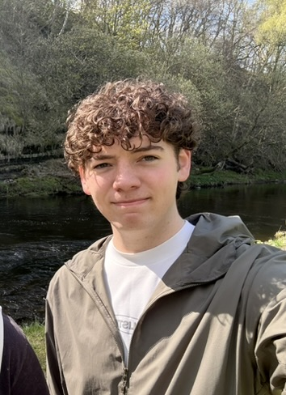

About HareHill OBM
Strategy, creativity and practical delivery. Supporting organisations to grow in a way that feels clear, manageable and true to their purpose.

Strategy, creativity and practical delivery. Supporting organisations to grow in a way that feels clear, manageable and true to their purpose.
HareHill OBM supports purpose led organisations to grow with clarity and strong foundations. Strategic thinking, practical delivery, sitting alongside charities, social enterprises and small businesses to bring structure and momentum. Ideas become plans. Plans get delivered.

Fi has spent her career working across education, community development and the third sector. Her background spans project management, strategic planning, funding development and evaluation, with a particular focus on helping organisations build the foundations they need to do their best work.
As Project Manager at BAVS, she led the development of the Berwickshire Reuse Hub from concept to delivery, securing National Lottery funding, creating employed positions and establishing the operational systems that allowed the project to thrive. As trustee and Secretary of Berwickshire Swap, she played a central role in shaping the organisation's strategic direction and developing The Loop, a charity shop that now provides a sustainable income stream for the organisation.
She has worked with Sea the Change and a range of other purpose-led organisations, supporting everything from funding applications and impact reporting to social media content creation and event promotion. Her approach is calm and collaborative, and she's genuinely committed to the organisations she works with.
Outside of work, Fi is drawn to the outdoors, good food and the kind of quiet that helps ideas take shape.

Jack is a web developer and digital designer with a background in computer science and a strong interest in purposeful design. He believes a good website should work for the people using it and feel true to the organisation it represents.
Alongside client work, Jack is the founder of Jute Journal, an independent digital publication. It reflects the same values he brings to client work: care, restraint and a focus on what actually serves the people using it.
His approach to web development for HareHill clients is collaborative from the start, working closely with Fi on structure and messaging before building something that genuinely reflects the organisation. He handles the technical build and design, with an eye for the details that make a website feel right rather than just functional.
When he's not building websites, Jack can usually be found reading, exploring the Scottish Borders, or thinking too hard about typography.
Between us, we cover strategy, creative direction, practical delivery and the technical build, working alongside organisations that want to grow without losing sight of what they're for.
Ready to work together? Get in touch →